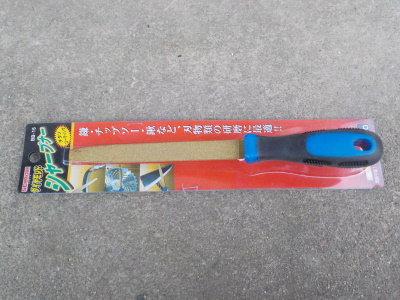
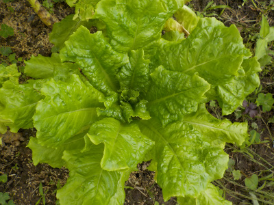
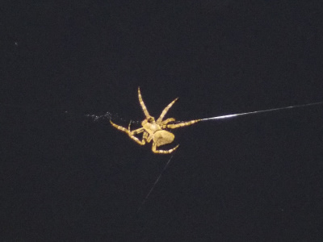

遊びで植物を育てよう
2021/06/29
ダイヤモンドシャープナーを買いました。

ホームセンターで500円くらいで販売していたので買いました。
鎌とハサミを研いでみましたが、簡単に刃先が銀色に光っていいですね。
草刈りと剪定がちょっと楽になりそう。
【6月TOP】
【日記TOP】
【園芸TOP】
2021/06/20
レタス系が終わって、ツルムラサキの時期になりました。

サニーレタスとかサンチュの色が薄くなってきたので、もう終わりです。

代わりにツルムラサキが成長しています。
でもツルムラサキはあんまり好きな味じゃないんだな。
【6月TOP】
【日記TOP】
【園芸TOP】
2021/06/05
毎年同じ場所に蜘蛛の巣が出来ます。

夜に蜘蛛が巣を作っていました。
高い場所に大きな蜘蛛の巣を作成中。
フラッシュを使って写真を何枚も撮ったら、ビックリしたみたいでどこかに逃げていきました。
【6月TOP】
【日記TOP】
【園芸TOP】
過去の日記
【2024年6月の日記】
【2023年6月の日記】
【2022年6月の日記】
【2021年6月の日記】
【2020年6月の日記】
【2019年6月の日記】
【2018年6月の日記】
【2017年6月の日記】
【2016年6月の日記】
【2015年6月の日記】
【2014年6月の日記】
【2013年6月の日記】
【2012年6月の日記】
【6月TOP】
【日記TOP】
【園芸TOP】
畑仕事じゃないよ。
【おいしいものを食べよう。】【たくさん寝よう。】
【ソロ活をしよう!】【季節感のあることをしよう。】【動画視聴はほどほどに。】【当サイトの全てのコンテンツは無断転載禁止です。】